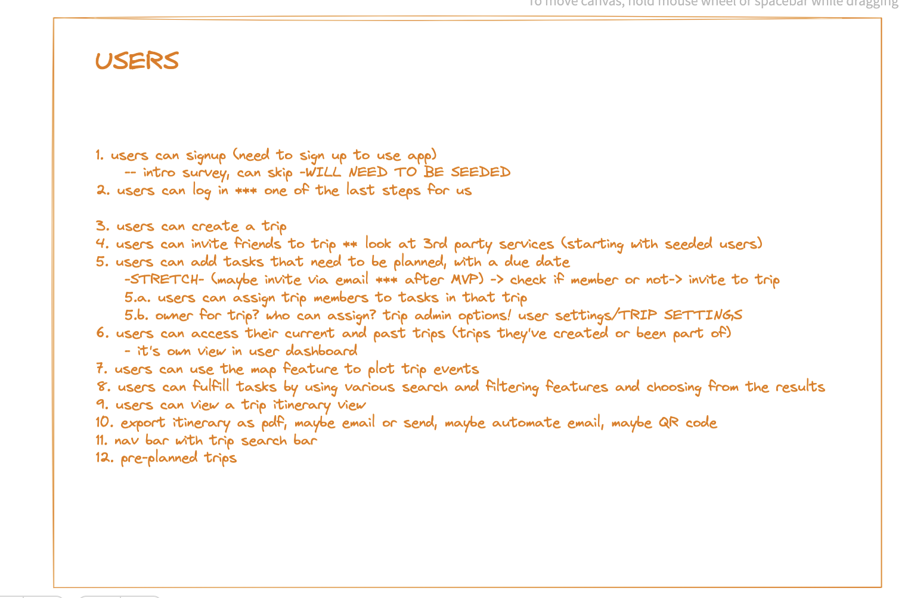
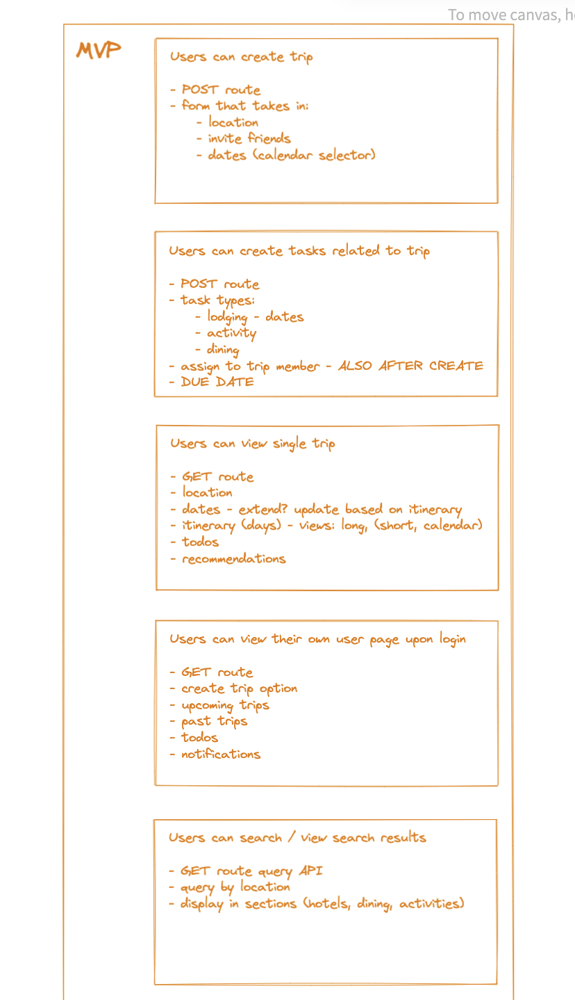
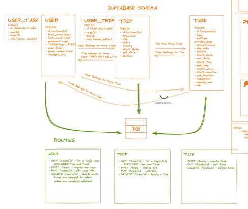
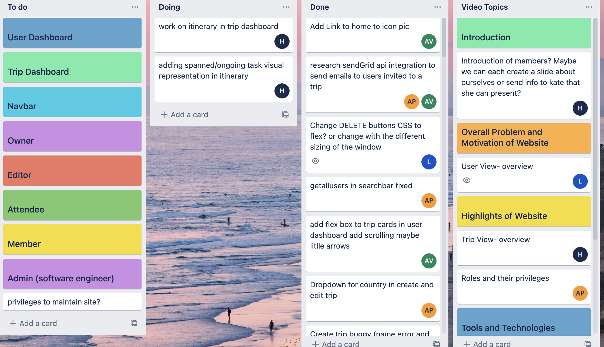
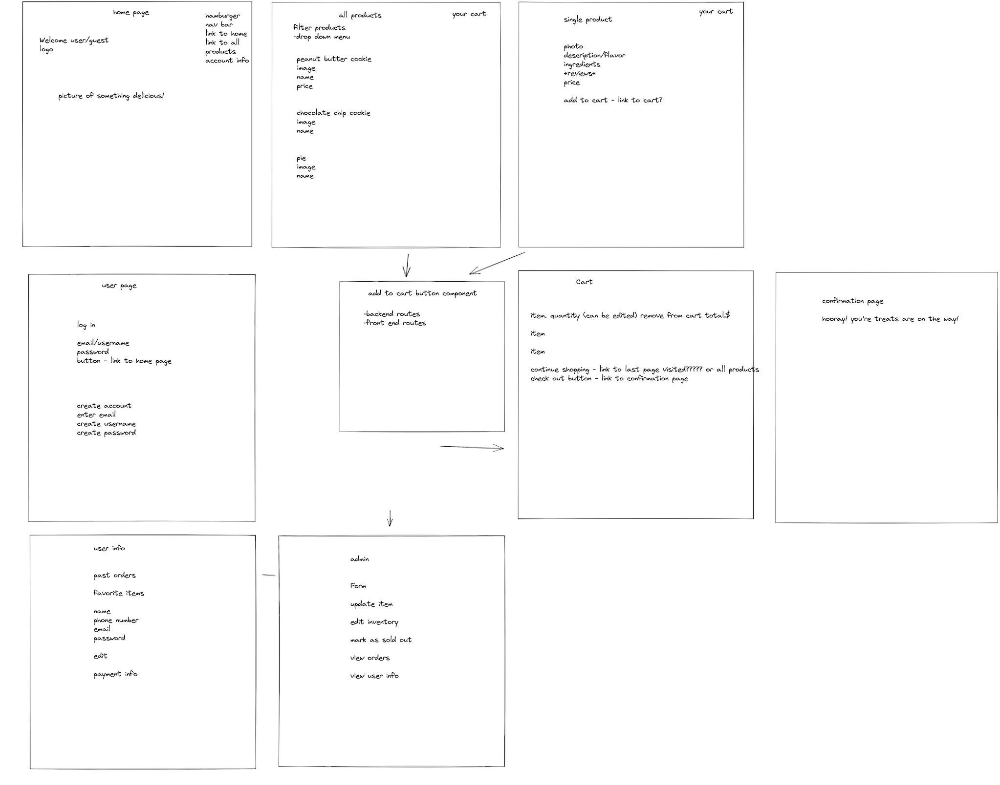
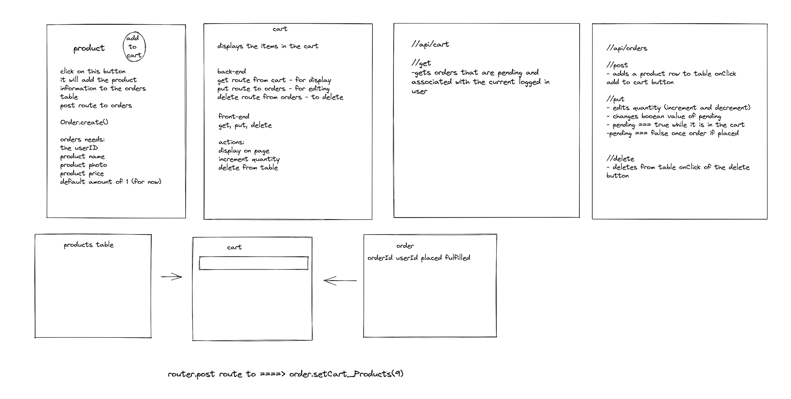
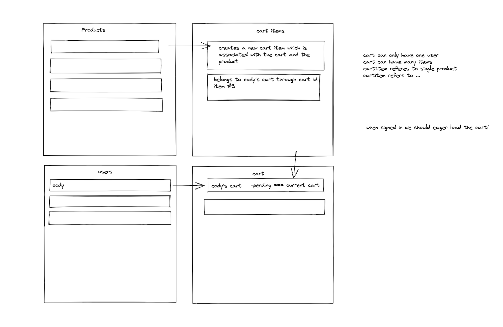
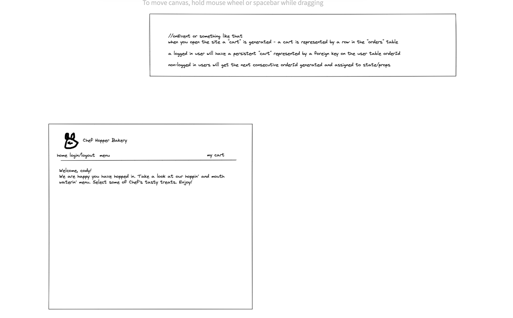

Welcome to my personal profolio website. This website was created
fully with vanilla HTML, CSS, and JavaScript. I am versed in using
React, but I wanted to use this oppurtunity to go back to basics and
practice my skills in pure HTML, CSS, and JavaScript. Please feel free
to explore! For more details about this website, here is the link to
github. For more
information about me, check out my Linkedin below:
📸 Snaphot of Me
For those who do not want to sift through my Linkedin; I was a public
school teacher in NYC for 6 years. In 2022, I took a leap of faith and quit. I self-studied foundational JavaScript and applied to a competive coding bootcamp called Fullstack-Grace Hopper.
Grace Hopper is a 17 week immersive
software engineering program. Through this wonderful experience, I was
able to gather precious experience making web applications. Through
these projects, I was exposed to code reviews, github, and learned how
to navigate team dynamics. We practiced agile project management
methodology and learned best practices from our instructors.
Below you can look at just some of the projects I have created.
My Projects 🗂
🌴 trippn
Our web application trippn is a centralized task management system which
organizes your travel information and keeps all trip-goers in the know. Travel to 🌴 trippn.
✈ To design this web application, we first planned how our database would
look and what features our minimal viable product would have.



Here is our Excalidraw of our database and minimal viable product
outline.
One of our biggest struggles was deciding user authorization and
roles. Different roles were allowed different accesses. Taking time
to plan this and deciding how it would look through our database
allowed for a smoother coding experience. In the end we used 2
through tables in PostgreSQL to help us gain access to trips and
tasks. (Click buttons to see more.)
✈ We did daily standups and tracked what we were working on using Trello.

A snapshot of our Trello
✈ We also presented our web application! Feel free to watch to get more
details on trippn.
🥧 This was the first project where I worked within a group. We had to work together and come up with the most optimal way to hold items in a cart. This was our first experience in working with through tables in PostgreSQL.




For this project, our team was more visually oritented. We needed to plan out how our actual website would look like. This helped us organize our future components and clarifed what our tasks were for that component.
🥧 One important aspect of our project was creating seed data to work with. It was important for us to have a good working foundation to test out all our functionality.
Our Seed Data
🥧 To keep track of what everyone was working on we did daily stand ups and documented our tasks using Google Docs. We were in constant communication using Slack and stayed in the same Zoom room when possible. This open communication allowed for us to problem solve merge conflicts on github and pair program when one of us needed help.
* Side Note:
Personally for me, this was my first exposure to the idea of local storage and authorization. It was fun to make a persistent cart using local Storage. We understood that local storage was not recommened due to security reasons, but it was the easist to implemnet with the amount of time we had. However, with this knowledge, it became the catalyst that pushed me to use cookies for my project trippn.
✏ Todo is a solo project. I had 3 days to play and create something with a framework or tool. I decided to create something with Electron. I was never able to package my app. However, I did learn the fundamentals when creating this app.
How Todo App Works
✏ This project not only exposed me to Electron, but it showed me the awesome aspects of AG Grid. The Todo adding, removing, and editing functionality came with a tutorial I found on AG Grid website.
✏ The changing the name on the window came from electron documentation.